Basic Table Structures & Operations in QGIS
Overview
This lab walks you through a lookup-table join in QGIS using a soils polygon layer and a separate soil-properties table.
The main task is practical: inspect the key field, fix the field-type mismatch, perform the join, and use the joined attributes in a map.
Getting Ready
Download the spatial data for this exercise:
You will also need the soil properties table:
After downloading:
- Unzip
Soils.zip. - Keep the shapefile parts together in the same folder.
- Use the
soils.shplayer from that unzipped folder in this exercise. - Open the Soil Properties Google Sheet and download it as a CSV when you reach that step in the lab.
Data for This Exercise
You will need:
In this workflow, many polygons in soils.shp share the same SOIL_TYPE, while the CSV has one row for each soil type.
Part 1: Open the Soils Layer and Inspect Its Key Field
- Open a new blank QGIS project.
- Save it in the same folder as the soils data if possible.
- Add the
soils.shplayer. - Right-click the
soilslayer and choose Layer CRS > Set Project CRS from Layer.
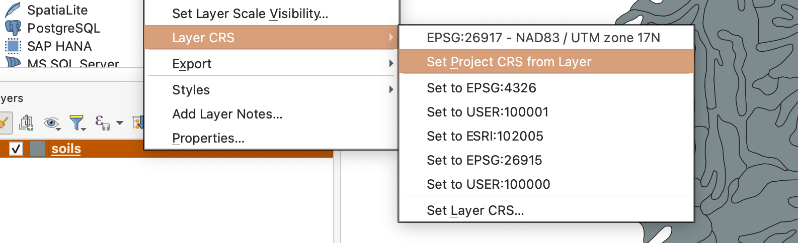
- Open the Layer Properties for
soils. - Go to the Fields tab and locate
SOIL_TYPE.
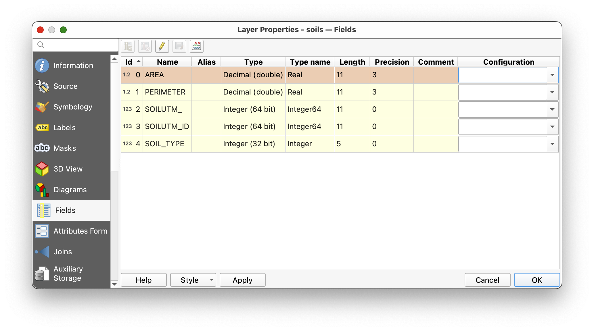
This SOIL_TYPE field is the key field already present in the spatial data. It stores a short code for each polygon.
Part 2: Symbolize the Existing Layer
- Open the Symbology tab for the
soilslayer. - Set the renderer to Categorized.
- Use
SOIL_TYPEas the value field. - Click Classify.
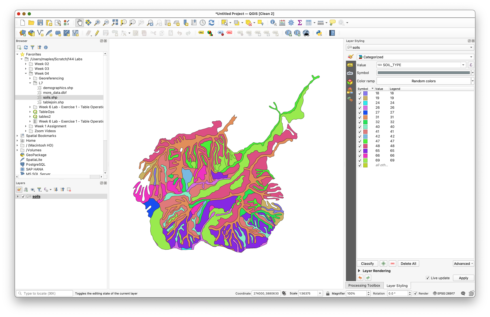
You should now see multiple soil classes on the map.
Why do this now? It helps you see that many polygons share the same
SOIL_TYPEvalue. That is your visual clue that the spatial layer contains repeated foreign-key values rather than one unique record per soil type.
Part 3: Download and Add the Soil Properties Table
Download the CSV table here:
Open the Google Sheet.
- Use File > Download > Comma-separated values (.csv).
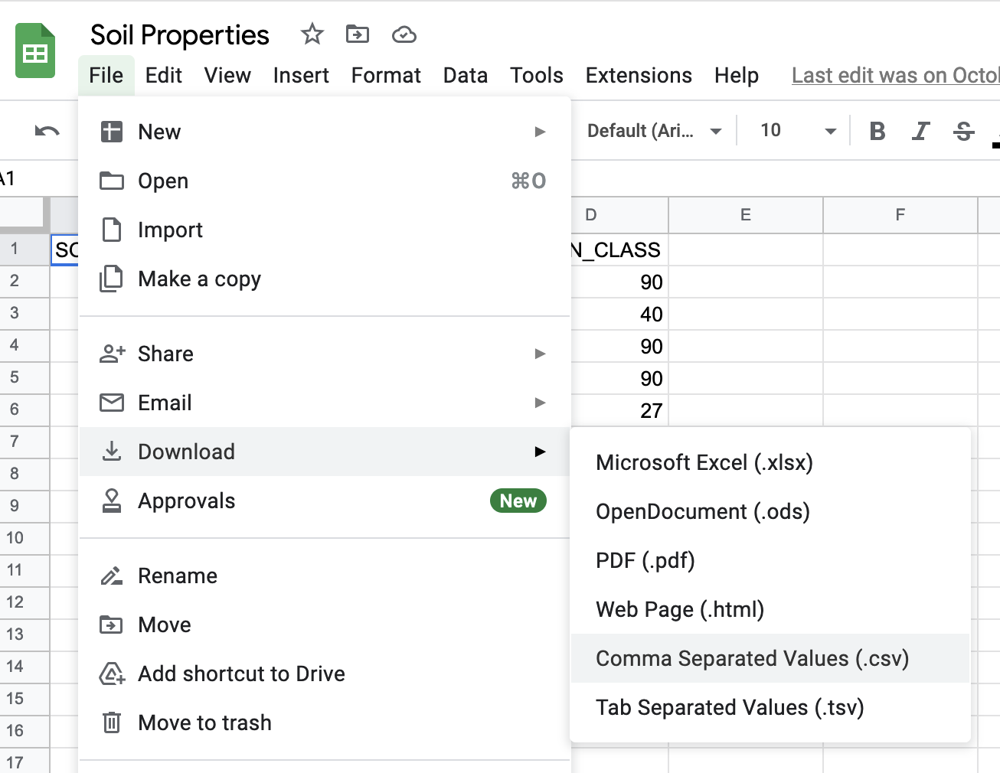
- Save the downloaded CSV in the same folder as your soils data.
- In QGIS, use the Browser panel to find that CSV.
- Right-click it and choose Add Layer to Project.
- Open the table and inspect its fields and rows.
Concept note: This table has no geometry, but it still matters spatially because it is designed to connect to mapped features through a shared code.
Part 4: Check Whether the Join Fields Match
Now compare the join field in both datasets.
- Open the
Soil Properties.csvtable. - Notice that the values are left-justified.
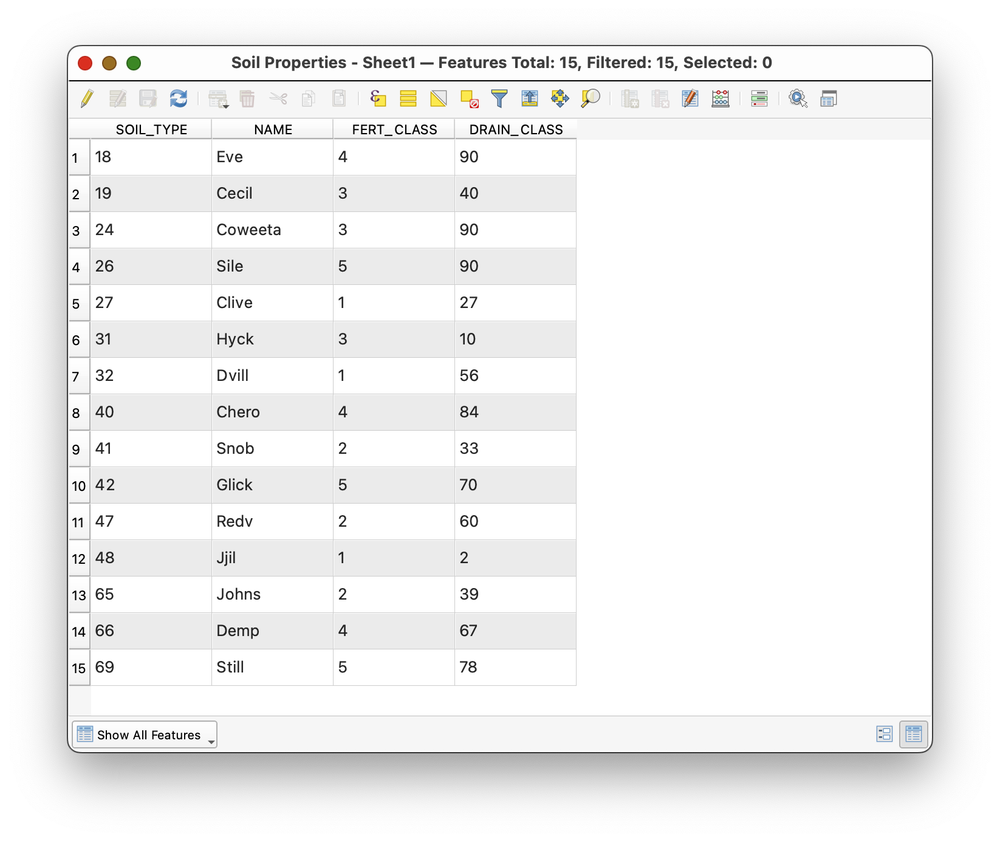
That is a clue that QGIS is reading them as text.
- Open the Properties of the CSV table.
- Go to the Fields tab.
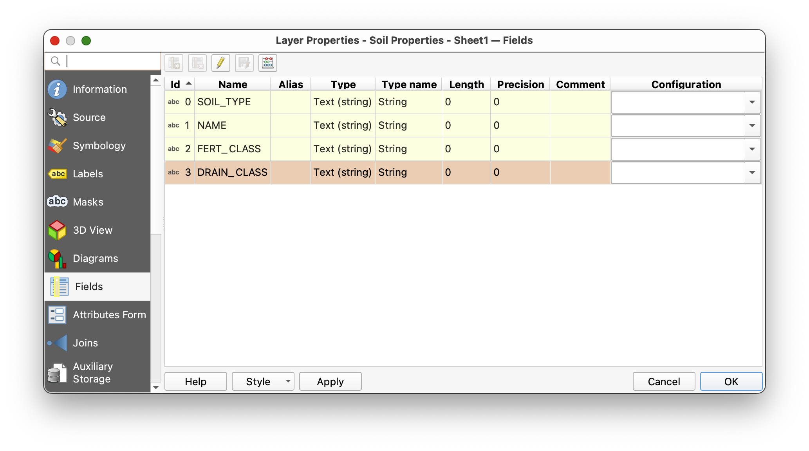
Why this matters: A join is not only about matching names. The fields should also match in type and formatting. Integer-to-integer is much safer than integer-to-text.
Part 5: Create a Matching Integer Key Field
Because CSV files often import fields as text, you will create a new integer version of the key field.
- Open the CSV table's attribute table.
- Toggle editing on if needed.
- Open the Field Calculator.
- Choose Create a new field.
- Name the field
SOIL_TYPE_INT. - Search for the
to_intfunction. - Build this expression:
to_int( SOIL_TYPE )
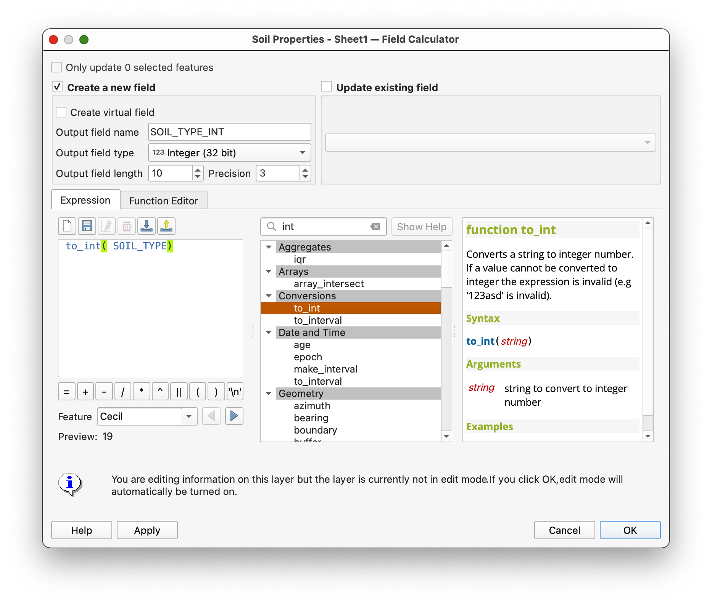
- Confirm that the preview looks correct.
- Click OK to create the new field.
- Save your edits and toggle editing off.
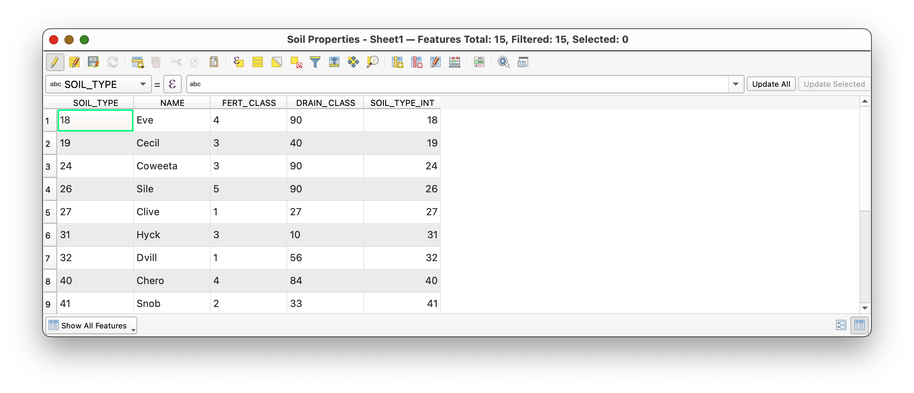
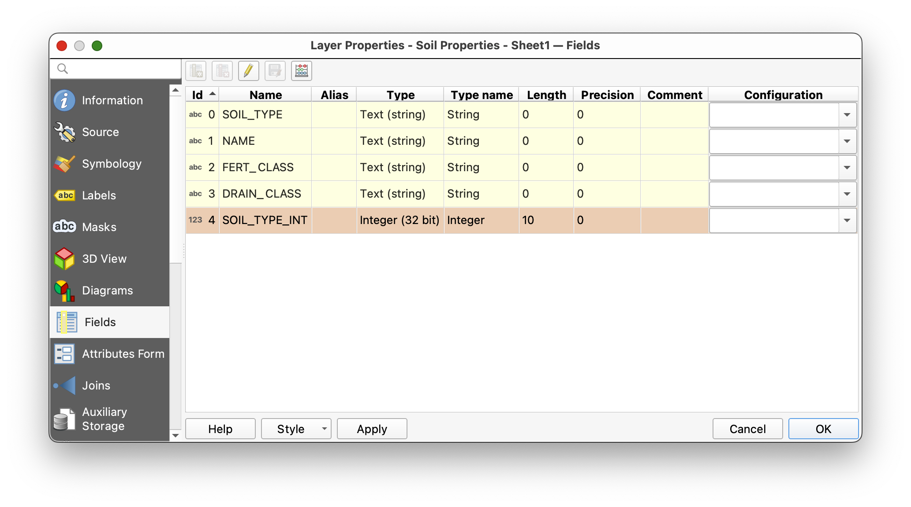
Concept note: This kind of cleanup is sometimes called data carpentry. It may feel small, but it is part of good GIS practice. Clean keys make joins more reliable, and reliable joins make your analysis easier to trust.
Part 6: Join the Table to the Spatial Layer
Now you are ready to connect the lookup table to the polygon layer.
- Open the Properties for the
soilslayer. - Go to the Joins tab.
- Add a new join.
- Join the CSV table to
soils. - Use the matching soil-type fields as the join fields.
If needed, use
SOIL_TYPEfrom the soils layer andSOIL_TYPE_INTfrom the CSV table.
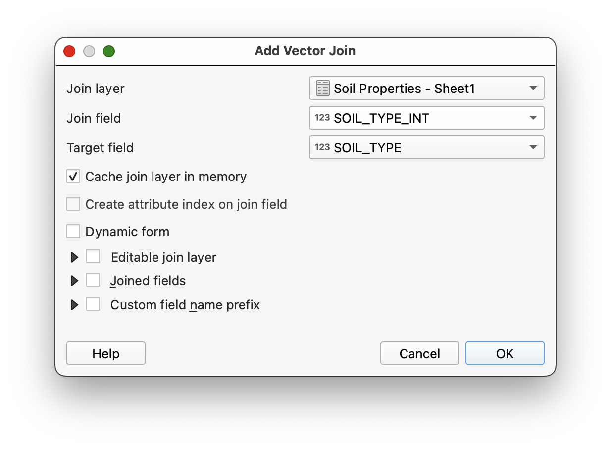
- Apply the join and close the dialog.
- Open the attribute table for the
soilslayer. - Scroll to confirm that the new soil-property fields have been added.
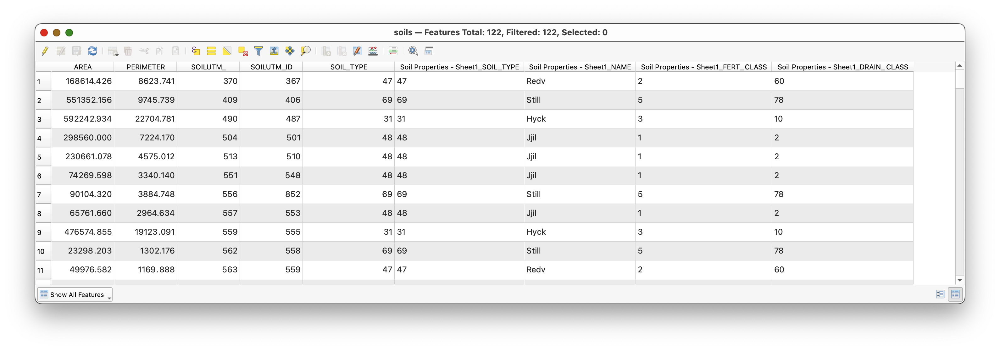
What kind of join is this? Many polygons in the
soilslayer are matching to one row in the soil-properties table for each soil type. From the perspective of the feature layer, this is a many-to-one join.What is happening conceptually? QGIS is not redrawing your polygons. It is enriching them by connecting each polygon's foreign key to a lookup record whose primary key defines the soil type.
Part 7: Make the Join Useful
Once the join is in place, you can use the added fields for mapping.
- Open the symbology for the
soilslayer again. - Create a Categorized map using the joined
NAMEfield from the soil-properties table instead of the numericSOIL_TYPEcode.
This is one of the main reasons to perform a join: coded data becomes more human-readable and more useful for communication.
Part 8: Turn the Joined Data into a Map
After you have completed the join, create a map layout as a PDF.
Your map should:
- display the soils layer categorized by the joined
NAMEfield - include the joined soil properties table in the layout
- include standard map elements such as title, name, CRS, scale, and basemap where appropriate
To insert the tabular information:
- Open a new QGIS layout.
- Use the Add Attribute Table tool to place the soil properties table in the layout.
- Use the table's Item Properties to clean up field names and formatting.
For the legend:
- Uncheck Auto update if needed.
- Click individual legend items to edit or remove them.
- Use the edit control if you want to improve labels.
The final result should look something like this:
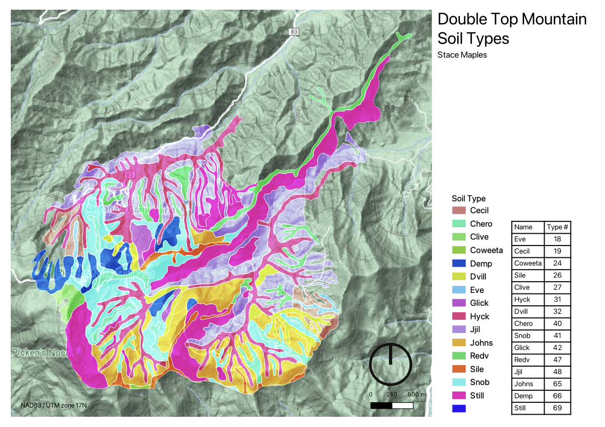
Why This Workflow Matters
I want to stress the usefulness of what you have just done.
In GIS, you will often start with a preexisting boundary or feature layer and then join new tabular data to it. That joined data may represent:
- properties
- measurements
- classifications
- survey results
- administrative labels
- demographic summaries
Once joined, those attributes can be symbolized, filtered, summarized, and laid out on maps. This makes a single spatial dataset far more flexible than it would be on its own.
That is why table joins are such a foundational GIS skill: they are one of the main ways that the spatial dimensions of the things we are interested in become explicit, and analytically and communicatively useful.